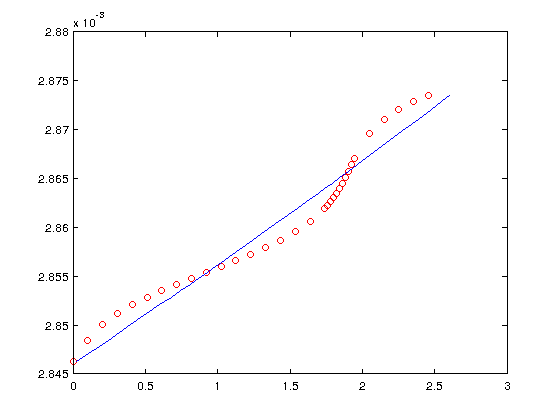
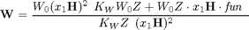
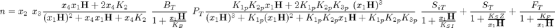
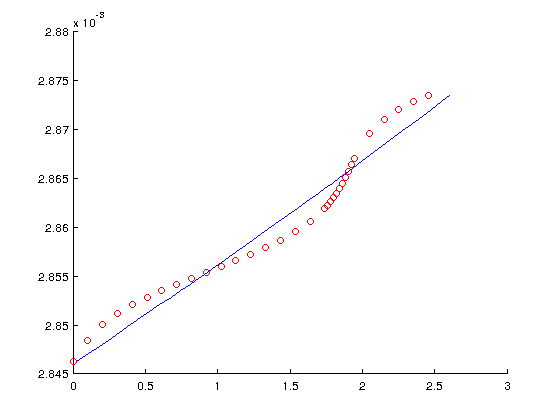

closed-cell total alkanity by Martin Suszczynski
(2011) elittoral S.L.N.E. and Bioges
Matlab version of fortran script writed by Andrew G. Dickson (1994); changelist:
- removed MaxPts limitation
- input/output in csv format
- updated to http://cdiac.ornl.gov/oceans/Handbook_2007.html
- nonlinear data fitting using levenberg-marquardt (default) or trust-region-reflective method provided by lsqcurvefit Matlab function
Contents
init
- csv: V/cm3, E/V,
- S - salinity of sample,
- PT[umol/kg] - total phosphate,
- SiT[umol/kg] -total silicate,
- T[oC] - temperature of sample when titrated,
- W0[cm3] - volume of sample titrated,
- C[mol/kg] - concentration of acid titrant,
- DACID[g/cm3] - density of acid titrant
clear all IN=importdata('dane.in.csv'); %matrix cheatsheet (columns,rows) ;) meta=IN.data(1,3:9); datos=IN.data(:,1:2); S=meta(1);PT=1e-6*meta(2);SiT=1e-6*meta(3);T=meta(4);V0=meta(5);C=meta(6);DAcid=meta(7); V=datos(:,1);E=datos(:,2)/1000;NPts=size(datos,1);
CALC
%MaxPts=100; %NPar = 4; LWA = MaxPts*NPar + 5*NPar + MaxPts; [ KNernst, E0, K2, BT, KB, K1P, K2P, K3P, KSI, ST, KS, Z, FT, KF, W0, W, KW, H ] = SetUp( S, T, V0, DAcid, NPts, V, E, C ); hold on plot(W,H,'ro') hold off x0=[1 2e-3 2e-3 1e-6]; %x(1)=F; %x(2)=AT; %x(3)=CT; %x(4)=K1; % M = @(x,xdata)x(1)*exp(-x(2)*xdata) + x(3)*exp(-x(4)*xdata); M = @(x,H)(W0*(x(1)*H).^2 - KW*W0*Z + W0*Z*x(1)*H.* ( x(2) - x(3)*((x(4)*x(1).*H + 2*x(4)*K2) ./ ((x(1)*H).^2 + x(4)*x(1).*H + x(4)*K2)) ... - BT./ (1 + x(1)*H./KB) - PT*((K1P*K2P*x(1)*H ... + 2*K1P*K2P*K3P - (x(1)*H).^3) ./ ((x(1)*H).^3 + K1P*(x(1)*H).^2 ... + K1P*K2P*x(1)*H + K1P*K2P*K3P)) ... - SiT./(1 + x(1)*H/KSI) ... + ST./(1 + KS*Z./(x(1)*H)) ... + FT./(1 + KF./(x(1)*H)) ))./(KW*Z - (x(1)*H).^2);
,
 (matlab latex bug)
[x,resnorm,residual,exitflag,output,lambda,jacobian] = ... lsqcurvefit(M,x0,H,W,[],[],optimset('Algorithm','levenberg-marquardt')) hold on plot(M(x,H),H) hold off %TOL = SQRT(DPMPAR(1)) TOL - tolerance for fitting %CALL LMDIF1(FCN, NPts, NPar, X, FVEC, TOL, INFO, IWA, WA, LWA)
Solver stopped prematurely.
lsqcurvefit stopped because it exceeded the function evaluation limit,
options.MaxFunEvals = 800 (the default value).
x =
1.0000 -0.0048 0.0007 -0.0020
resnorm =
0.7369
residual =
Columns 1 through 6
0.0237 0.0237 0.1407 0.1927 0.2031 0.1911
Columns 7 through 12
0.1657 0.1320 0.0929 0.0507 0.0066 -0.0380
Columns 13 through 18
-0.0815 -0.1229 -0.1603 -0.1913 -0.2123 -0.2164
Columns 19 through 24
-0.1901 -0.1791 -0.1656 -0.1484 -0.1282 -0.1033
Columns 25 through 30
-0.0735 -0.0394 -0.0011 0.0381 0.0772 0.2052
Columns 31 through 34
0.2388 0.2274 0.1924 0.1432
exitflag =
0
output =
iterations: 144
funcCount: 804
stepsize: 1.5451e-05
cgiterations: []
firstorderopt: 6.9119e+04
algorithm: 'Levenberg-Marquardt'
message: [1x146 char]
lambda =
upper: [4x1 double]
lower: [4x1 double]
jacobian =
1.0e+05 *
0.0029 -0.7347 -1.8776 2.4334
0.0029 -0.7347 -1.8776 2.4334
0.0029 -0.7342 -1.8711 2.4202
0.0028 -0.7338 -1.8665 2.4109
0.0028 -0.7335 -1.8631 2.4041
0.0028 -0.7332 -1.8604 2.3987
0.0028 -0.7330 -1.8581 2.3940
0.0028 -0.7328 -1.8561 2.3899
0.0028 -0.7327 -1.8541 2.3860
0.0028 -0.7325 -1.8523 2.3824
0.0028 -0.7324 -1.8506 2.3789
0.0028 -0.7322 -1.8488 2.3754
0.0028 -0.7321 -1.8470 2.3718
0.0027 -0.7319 -1.8452 2.3681
0.0027 -0.7317 -1.8432 2.3641
0.0027 -0.7315 -1.8410 2.3598
0.0027 -0.7313 -1.8385 2.3548
0.0027 -0.7310 -1.8355 2.3488
0.0027 -0.7307 -1.8316 2.3410
0.0027 -0.7306 -1.8306 2.3390
0.0027 -0.7305 -1.8296 2.3370
0.0027 -0.7304 -1.8284 2.3347
0.0027 -0.7303 -1.8271 2.3322
0.0027 -0.7302 -1.8257 2.3294
0.0027 -0.7300 -1.8242 2.3263
0.0026 -0.7299 -1.8225 2.3229
0.0026 -0.7297 -1.8207 2.3193
0.0026 -0.7296 -1.8188 2.3157
0.0026 -0.7294 -1.8170 2.3120
0.0026 -0.7288 -1.8098 2.2978
0.0026 -0.7284 -1.8055 2.2894
0.0026 -0.7281 -1.8026 2.2837
0.0025 -0.7279 -1.8005 2.2795
0.0025 -0.7278 -1.7988 2.2762
 out
- LMDIF1 exit parameter 1
- Function calls 9
- Jacobian calls 28
- E0 = 0.393609 V
- AT = 2320.21 umol/kg
- CT = 2344.26 umol/kg
- pK1 = 5.9090
- s = 1.209 umol/kg
- V/cm3, E/V, -log[H], dH/[umol/kg]
- csv: -log[H], dH/(umol/kg), E0[V], AT[umol/kg], CT[umol/kg], pK1
F=x(1);AT=x(2);CT=x(3);K1=x(4);
OUT(:,1)=-log10(H*x(1));
OUT(1,2)=E0-KNernst*log(x(1));
OUT(1,3)=1e+3*x(2);
OUT(1,4)=1e+3*x(3);
OUT(1,5)=-log10(1e-6*x(4));
csvwrite('dane.out.csv',OUT);
TODO list
- real data test
- CALC revision
- fix syntax bugs